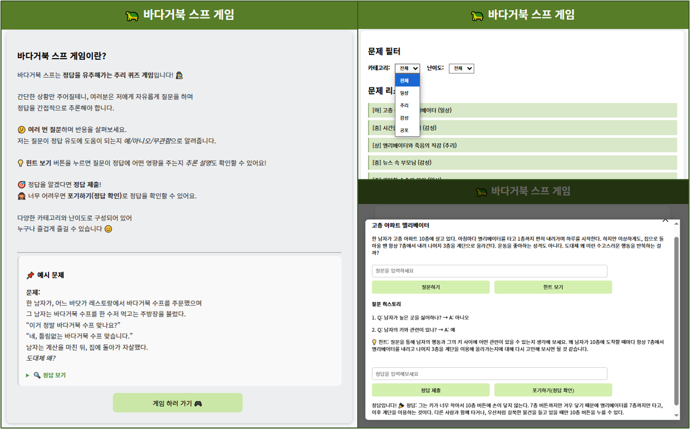

Web Service of Detective Game
Python
JavaScript
CSS
LLM
FastAPI
DB
Chat
AI와 함께 즐길 수 있는 웹 기반 추리게임 플랫폼입니다.
⭐ 프로젝트 소개
- 주관: 개인 프로젝트
- 기간: 2025. 03
- 한 줄 소개: 추리게임으로 유명한 바다거북 스프 게임을 AI와 함께 웹 기반으로 즐길 수 있는 형태로 재구성하였습니다.
💎 왜 이 프로젝트가 중요한가?
- 바다거북 스프 게임은 기존에는 사람 간의 질문/응답 형태로 진행되는 오프라인 기반 추리게임입니다.
- 하지만 AI와 함께 상호작용하며 진행되는 게임으로 발전시키면, 언제 어디서나 혼자서도 즐길 수 있고, 기존 게임 방식의 확장성 또한 확보할 수 있습니다.
- 다양한 난이도와 카테고리, 정답 도출 힌트 제공 기능 등을 통해 더 몰입감 있는 경험을 제공합니다.
🔎 핵심 기술은 무엇인가?
AI 기반 추론형 게임 UX 설계
- 질문에 대해 AI가 “정답 유도에 도움이 되는지”를 판단하여, 사용자가 점진적으로 추론할 수 있도록 설계했습니다.
힌트 기능 및 정답 판단 보조 시스템
- 사용자의 질문이 정답에 어떤 영향을 주는지 추론 기반 설명을 생성합니다.
- 사용자가 제출한 정답이 실제 답에 근접한지를 AI 기반으로 판단합니다.
사용 기술
- Frontend: HTML / CSS / JavaScript (Vanilla JS 기반)
- Backend: FastAPI
- AI Model: OpenAI GPT API (gpt-3.5-turbo)
- 추론 분류 및 reasoning 기능에 사용합니다.
- Database: SQLite
- 질문 리스트를 관리하는데에 사용합니다.
- Infra: Docker, Docker Compose
💡 어떠한 사고방식/생각을 거쳤는가?
게임의 온라인화와 AI 인터랙션의 융합
- 바다거북 스프 게임은 사람이 질문하고 사회자가 응답하는 구조입니다.
- 이를 AI가 수행하게 하면 누구나 혼자서도 게임을 즐길 수 있는 UX를 제공할 수 있다고 판단하였습니다.
🌄 어떠한 시행착오를 겪었는가?
Docker 환경 구성
- 시행착오:
- 초기에는 backend, frontend, db 등을 각각 별도로 관리하여 실행 및 유지보수에 번거로움이 있었습니다.
- 특히 SQLite DB 파일에 대한 접근 경로 문제도 발생하여 서버가 정상적으로 데이터를 읽지 못하는 문제가 있었습니다.
- 해결 방안:
- docker-compose를 활용하여 전체 환경을 통합적으로 관리할 수 있도록 구성하였습니다.
- DB 경로 이슈는 볼륨 매핑 재설정 및 절대경로/상대경로 수정을 통해 해결하였습니다.
질문 제출 후 입력창 초기화 vs 힌트 버튼 UX 충돌
- 시행착오:
- 질문 제출 후 입력창을 자동 초기화하도록 설정했으나, 사용자가 이후에 “힌트 보기” 버튼을 눌렀을 경우, 질문 내용이 사라져 힌트 제공이 불가능한 문제가 발생했습니다.
- 해결 방안:
- 가장 최근에 입력한 질문을 latestQuestion이라는 전역 변수에 저장하여, 힌트 보기 기능에서는 해당 질문을 자동으로 참조할 수 있도록 로직을 수정했습니다.
모바일 환경 대응 부족
- 시행착오:
- 초기 개발은 PC 환경 중심으로 설계되어, 모바일 기기에서 화면 크기/입력창 크기/터치 확대 등에서 사용자 경험이 떨어지는 문제가 발생했습니다.
- 해결 방안:
- CSS를 기반으로 반응형 UI 스타일 개선 작업을 진행하여, 모바일 환경에서도 자연스럽게 콘텐츠가 출력되도록 개선하였습니다.
- 입력창 크기, 버튼 배치, 콘텐츠 스크롤 등을 조정하여 사용자 불편을 줄였습니다.
🧶 부록
- 사용 코드: github
시연
데모 영상 링크 